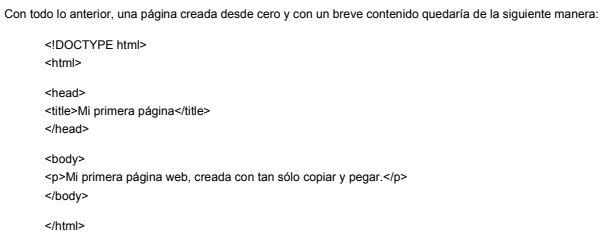

La creación de una página web comienza por la comprensión de sus elementos básicos, las etiquetas, y de su diseño estructural. En este módulo analizaremos ambos conceptos y crearemos nuestros primeros ejemplos. Para comenzar a crear nuestras páginas web lo único que tendremos que hacer es ir componiendo las diferentes etiquetas HTML dentro de un documento.
Etiquetas HTML
Strong
Una etiqueta HTML es un término rodeado por un signo de menor y otro de mayor; por ejemplo: "strong" Esta etiqueta indica que el texto que aparece a continuación se debe destacar sobre el resto; normalmente se muestra en negrita. En muchos casos necesitaremos también una segunda etiqueta que delimite el final. Así, para que el texto deje de estar destacado y continúe normalmente, empleamos la misma etiqueta con una barra: "/strong" El conjunto de las dos etiquetas y el texto contenido en su interior conformarían un elemento HTML.
hr/
Hace que en el documento aparezca una línea separando el texto anterior del siguiente. Como se puede observar, cuando un elemento no va a tener una etiqueta de cierre (no existe un ), el indicador de fin se añade en la propia etiqueta inicial. Nota: Todas las etiquetas HTML se escriben siempre en minúsculas. Si bien los navegadores son capaces de interpretar las etiquetas en mayúsculas, las normas de la W3C especifican que todas las etiquetas se debe escribir en minúsculas. Otra característica importante de las etiquetas es que son anidables, por lo que podemos definir un párrafo y en su interior incuir una lista de elementos, imágenes, texto destacado, etc. empleando diferentes etiquetas. Veremos muchos ejemplos al respecto.
Parámetros de las etiquetas
Muchas etiquetas HTML necesitan contar con parámetros para funcionar correctamente. Éstos son modificadores que se introducen entre los signos de apertura y cierre para definir algún matiz concreto del elemento HTML. Por ejemplo, la etiqueta img / se emplea para insertar una imagen en la página web, pero por si sola no funciona correctamente. Necesita que le incorporemos un parámetro en el que indiquemos qué imagen será la que se muestre.
Quedaría así:
img src=”fotodelgrupo.jpg” /
En el ejemplo siguiente, además de indicar qué imagen se mostrará, establecemos el tamaño que ocupará en la pantalla:
img src=”fotodelaula5.jpg” width=”300px” height=”150px”/
Los parámetros se identifican por un término, seguido de un signo de igual y a continuación, entre comillas, el valor que le queramos asignar.
Nota: Aunque podemos usar comillas simples, normalmente se usan siempre comillas dobles para englobar el valor de cada parámetro.
Ejemplo:
Estructura básica de una página
Las páginas web mantienen una estructura muy sencilla que debemos respetar, para que los navegadores sean capaces de presentarla. No podemos comenzar nuestra página con una etiqueta de párrafo, por ejemplo, sino que debemos indicar qué tipo de página estamos generando, qué información adicional llevará y dónde comienza el contenido que debe ser mostrado. De este modo, cualquier página web incluirá al menos las siguientes etiquetas:
"html" y "/html" colocadas al principio y fin del documento indican dónde comienza y finaliza la página web.
"head" y "/head" definen un espacio en el que incluiremos contenidos que no se van a mostrar directamente en el navegador, sino que sirven para describir determinados aspectos del documento, como su título, autor, los estilos que emplearemos, pequeñas funciones que se deben realizar, etc.
"body" y "/body" en su interior se incluye la información que se mostrará en el navegador. Es el contenido real de la página, estructurado mediante las diferentes etiquetas.
Junto a las tres etiquetas anteriores podemos encontrar algunas más que son importantes para que la web se interprete correctamente:
"!DOCTYPE" y "?xml" son dos etiquetas que indican qué tipo de documento estamos generando y a qué normas se ajusta. Normalmente serán siempre iguales y será nuestro editor el que se encargue de colocarlas al principio de la página, cuando sea necesario.
Texto
Párrafos
Las etiquetas "p" y "/p" se emplean para definir un bloque de texto que se comporta como un párrafo. Normalmente no dejaremos nunca una porción de texto suelta por la página web, sino que la rodearemos con esas etiquetas. El editor de texto se encargará de hacerlo por nosotros pero, si estamos usando otro tipo de editor, debemos asegurarnos de qué sucede.
Títulos
Las etiquetas "h1" y "/h1" se utilizan para definir un texto como título, indicando que es una cabecera (la h viene de header, cabecera en inglés) que queremos destacar sobre el resto del texto. Junto a "h1" contamos con "h2", "h3" y así hasta "h6" para definir diferentes títulos, de mayor a menor importancia.
Una página web bien diseñada contará con estos encabezados para definir los distintos apartados del texto, con sus diferentes niveles.
Saltos de línea y líneas separadoras
Para complementar las opciones de separación del texto, contamos con dos etiquetas más.
"br /" inserta un salto de línea en el texto. No genera un nuevo párrafo, sino que parte la línea en dos. Es un elemento puntual, que no lleva etiqueta de cierre.
"hr /" inserta un salto de línea en el texto, pero mostrando una línea horizontal visible.
Etiquetas de estructura
En las páginas web actuales, normalmente no nos limitaremos a definir todo el texto de la página exclusivamente con etiquetas "hx" y "p", ya que se consigue una estructura demasiado general.
Los estándares actuales nos proporcionan un conjunto de elementos HTML para englobar los contenidos que se suelen encontrar en una página web. Cada uno de estos elementos está pensado para contener diferentes elementos HTML, como párrafos, imágenes, etc. Estas son sus etiquetas:
"header" y "/header": para definir un bloque de contenido que hará las veces de título de la páginaweb.
"footer" y "/footer": define el pie de página de nuestra web.
"nav" y "/nav": donde incluiremos diferentes enlaces para que el usuario pueda desplazarse entre las partes de nuestro sitio web.
"section" y "/section": para definir grandes secciones de nuestra página.
"article" y "/article": marca los límites de un contenido específico, como una entrada de un blog o un artículo en general.
"aside" y "/aside": se emplea para definir un contenido que está relacionado con la página, pero que se debe considerar como separado del contenido principal.
Junto a estos elementos aún contamos con algunos más como "hgroup" para cabeceras de secciones, "figure" para contenidos multimedia, "time" para definir la fecha del contenido o "mark" para definir textos destacados para referencias; todas estas etiquetas con sus respectivos cierres.
La cabecera de la página web
Como recordaremos, cada página web cuenta con un elemento "head" colocado antes del "body"
Esta cabecera general de la página se emplea para incorporar contenidos que no se mostrarán directamente, pero que tienen una elevada influencia en el aspecto que tendrá la página y en su comportamiento.
En su interior podemos añadir algunos de los siguientes elementos HTML:
"title" y "/title": se emplea para definir el título de la página. Es imprescindible en HTML5, por lo que siempre debemos añadirlo. Este es el título que se mostrará en la barra de título del navegador, al hacer un marcador a la página o en los buscadores de Internet.
"link /": se utiliza para enlazar con recursos externos, generalmente hojas de estilo. Volveremos sobre ello más adelante.
"style" y "/style": nos permite definir estilos específicos para la página actual. Se suele emplear en combinación con el anterior, por lo que los trataremos al llegar a las hojas de estilo.
"base /": define la URL base para el resto de los enlaces que incluyamos en la página web. Se emplea en casos muy concretos.
"script" y "/script": es otro importante elemento que se utiliza para englobar acciones en otros lenguajes, generalmente Javascript, para conseguir que la página web realice determinadas tareas. Estas son operaciones que se ejecutan al acceder a la página, aumentando su versatilidad.
Resumen
Hemos comenzado a conocer los elementos HTML, con sus etiquetas y sobre todo la estructura de una página web. La información sobre la página se integra en el elemento head, mientras que el contenido se inserta dentro del elemento body.
Etiquetas fundamentales
| Etiqueta | Función |
| p | párrafo |
| h1...h6 | encabezados |
| hr | línea horizontal |
| header, footer, nav, section, article, figure, aside | aspectos estructurales |
| title | título |
| meta | información sobre la página |
| style y link | para trabajr con hojas de estilo |
| script | para añadir acciones extra a la página |